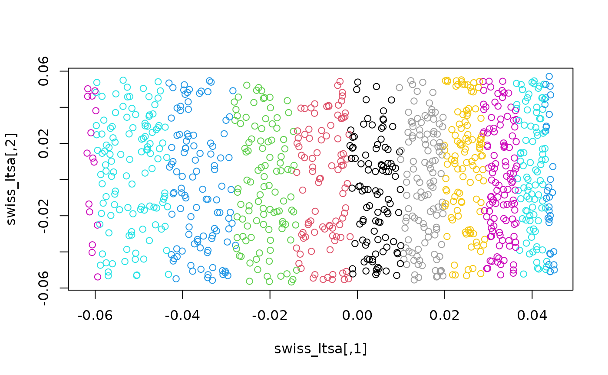

Apply the Local Tangent Space Alignment (LTSA) method (Zhang and Zha, 2004) for dimensionality reduction.
ltsa(
X,
n_neighbors = 15,
ndim = 2,
nn_method = "nnd",
eig_method = "rspectra",
include_self = TRUE,
normalize = FALSE,
ret_B = FALSE,
n_threads = 0,
verbose = FALSE,
...
)The input data matrix or dataframe with one observation per row.
The size of local neighborhood (in terms of number of neighboring sample points) used for manifold approximation.
The dimension of the space to embed into.
Method for finding nearest neighbors. Can be one of:
"nnd" Approximate nearest neighbors by Nearest Neighbor Descent.
"exact" Exact nearest neighbors by exhaustively comparing all items.
Slow for large datasets.
How to carry out the eigendecomposition. Possible values are:
"rspectra" Use RSpectra::eigs_sym().
"irlba" Use irlba::irlba().
"svdr Use irlba::svdr().
"fullsvd" Use the base::svd() function. This is only feasible for small
datasets and should be used for diagnostic purposes only.
"eigen" Use the base::eigen() function. This is only feasible for
small datasets and should be used for diagnostic purposes only.
Should an item be part of its own neighborhood? This has
a minor effect on most results, but work by Zhang and co-workers (2017)
suggests that this is in effect the main difference between LTSA and the
Hessian Locally Linear Embedding (HLLE) method, so setting this to FALSE
may allow emulating the HLLE method.
If TRUE calculate the eigendecomposition on a normalized
version of the Laplacian. This may be slightly easier to converge while
giving similar results to the un-normalized case. It may also have suitable
better properties if clustering is to be carried out on the eigenvectors.
If TRUE, return the matrix instead of the eigenvectors. This
is mainly useful for diagnostic purposes if eigendecomposition is failing.
Number of threads to use. Applies only to the nearest neighbor calculation.
If TRUE log information about progress to the console.
Extra arguments to be passed to the eigendecomposition method
specified by eig_method. For "rspectra", arguments are passed to the
opts list. Suitable parameters include:
ncv Number of Lanzcos vectors to use.
tol Tolerance.
maxitr Maximum number of iterations.
For "irlba" suitable arguments are:
work Working subspace dimension size.
tol Tolerance.
maxit Maximum number of iterations.
For "svdr" suitable arguments are:
extra Number of extra vectors to use.
tol Tolerance.
it Maximum number of iterations.
For more details see the documentation for RSpectra::eigs_sym(),
irlba::irlba() and irlba::svdr() functions, respectively. Don't pass
other arguments unless you know what you are doing, as it may cause the
ltsa to fail.
Zhang, Z., & Zha, H. (2004). Principal manifolds and nonlinear dimensionality reduction via tangent space alignment. SIAM journal on scientific computing, 26(1), 313-338. https://doi.org/10.1137/S1064827502419154
Zhang, S., Ma, Z., & Tan, H. (2017). On the Equivalence of HLLE and LTSA. IEEE transactions on cybernetics, 48(2), 742-753. https://doi.org/10.1109/TCYB.2017.2655338
n <- 1000
max_z <- 10
phi <- stats::runif(n, min = 1.5 * pi, max = 4.5 * pi)
x <- phi * cos(phi)
y <- phi * sin(phi)
z <- stats::runif(n, max = max_z)
swiss_roll <- data.frame(x, y, z)
# unroll it
swiss_ltsa <- ltsa(swiss_roll)
plot(swiss_ltsa, col = phi)

# compare with PCA
swiss_pca <- stats::prcomp(swiss_roll, rank. = 2, scale = FALSE, retx = TRUE)$x
plot(swiss_pca, col = phi)